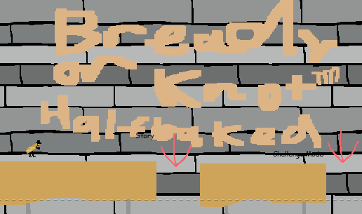
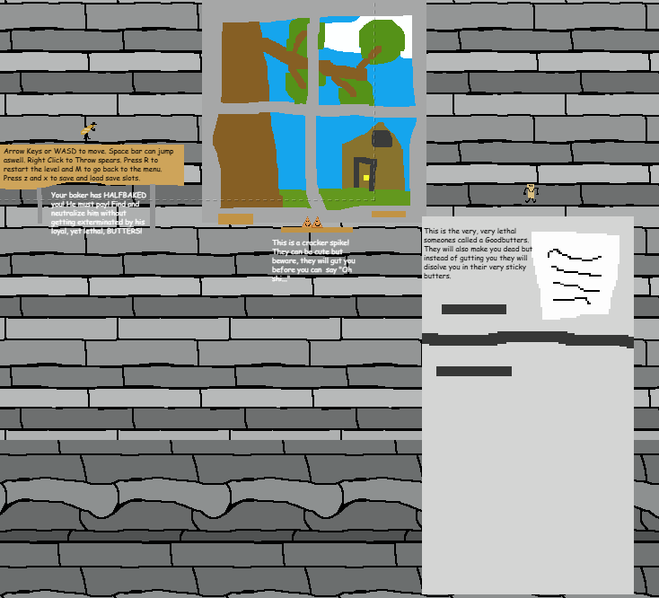
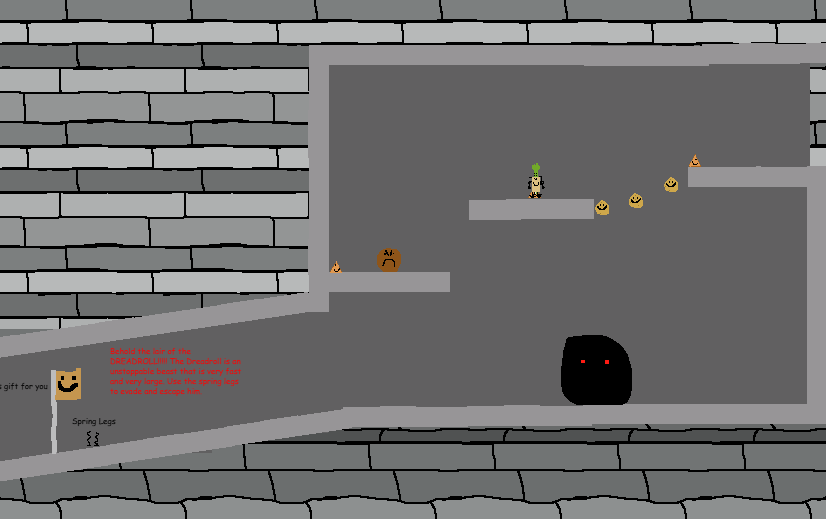
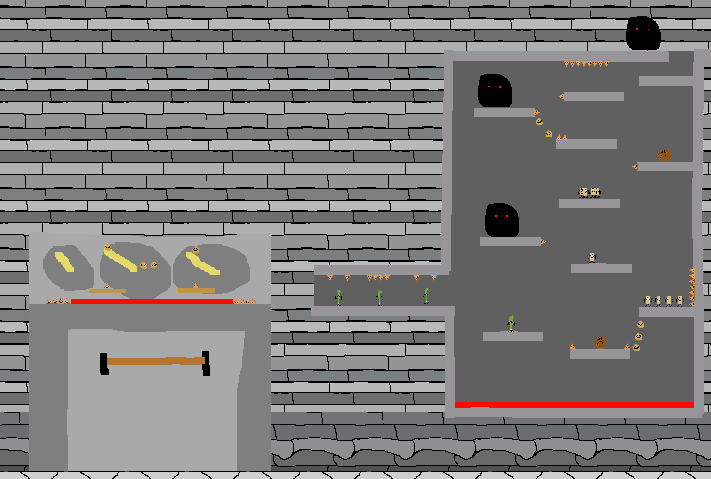

Welcome to the wonderful world of BREADY OR KNOT: HALFBAKED!!!!


Bready or Knot was the first big game I made and was also the first major project I did for my multimedia class. The premise for the game was you are a baguette who was underbaked by his baker and desires VENGENCE!!!! You play through the level to get to your baker while fighting a variety of enemys, from sticks of butter to flying cookies to new "species" of food never thought of. Additionally a challenge mode is available with 3 levels of difficulty and an ending not yet completed but will reveal the true story and the sinister goals of the baker and baguette. Also plans for a better quality remake are also in existence to make an equaly fun game with ten times the quality. (link to game will be added later when game is more done)

